⟨0,1⟩
| 40 | shades of blue defined in 2000 places (primary color) |
| 200 | font-family definitions |
| 350 | font-sizes |
| infinity | custom pixel sizes |
Design System
a living style guide
problem no. 1
naming things

block => the-button
element => the-button__title
modifiers => the-button__title--active
Typography Token
font family
| ds__typography__font__primary | Arial |
| ds__typography__font__secondary | Open Sans |
sizes
| ds__typography__size__base--text | 12px |
| ds__typography__size__base--line | 14px |
| ds__typography__size__xs--text | calc( 0.8 * base--text ) |
| ds__typography__size__xs--line | calc( 0.8 * base--line ) |
| ds__typography__size__m--text | calc( 1 * base--text ) |
| ds__typography__size__m--line | calc( 1 * base--line ) |
| ... | |
Spacing Token
base size
| ds__spacing__base | 16px |
| ds__spacing__nospace | 0 |
geometric progression
Spacing Token
sizes
| ds__spacing__size--1/2 | calc(ds__spacing__base / 2) |
| ds__spacing__size--1 | ds__spacing__base |
| ds__spacing__size--2 | calc( ds__spacing__base * 2 ) |
insets
| ds__spacing__inset--1/2 | [ ds__spacing__size--1/2, ds__spacing__size--1/2 ] |
| ds__spacing__inset--squish--1/2__1 | [ ds__spacing__size--1/2, ds__spacing__size--1 ] |
| ds__borders__size--s | 1px |
| ds__borders__size--m | 2px |
| ds__borders__radius--s | 3px |
| ds__borders__radius--m | 5px |
theme
| ds__colors__theme--primary | |
| ds__colors__theme--secondary |
shades
palette
colors
| warning |
|
| error |
|
| success |
|
palette
colors

defaults
states
Despite The Tokens
icons
interactions
Interactions Library
hover
Applies when element has an executable action, hover visually indicates the action availability.
click to action
Applies only when both button down, and button up actions are performed withing the element boundaries, action is performed when the 'button up' event is finished. Element should visually indicate both 'down' and 'up' events. Every element with this action should be indicated on hover [see hover interaction].
click to toggle
Element state is changed when 'button down' event is finished. Every element with toggle should be indicated on hover [see hover interaction].
text content strategy - ellipsis
Content text is always one line only. In the case of insufficient space, text is truncated at the end and followed by the ellipsis character. Component must provide the way to display the whole text on long hover [see long hover interaction].
costs
$40 000
?
Taxonomy
how to
| 1. explore the product |
| 2. screenshot components |
| 3. print and cut them |
| 4. tag them |
| 5. collect to groups |
| 6. label groups |
| 7. create your taxonomy tree |
one ring taxonomy
multiple libraries
design system is
| design tokens |
| taxonomy |
| wireframe library |
| visual library |
| component library |
| library hub |
| layouting templates |
| guidelines [voice of tone, motion] |
| tools |
| good craftmanship |
| designers maintain the library |
| developers are mainly consumers |
| centralized design decisions |
| quick conversation between designers and developers |
| consistency |
| awareness of the impact |
| systemic design approach |
| up to date design specs |
| positive impact on customer experience |